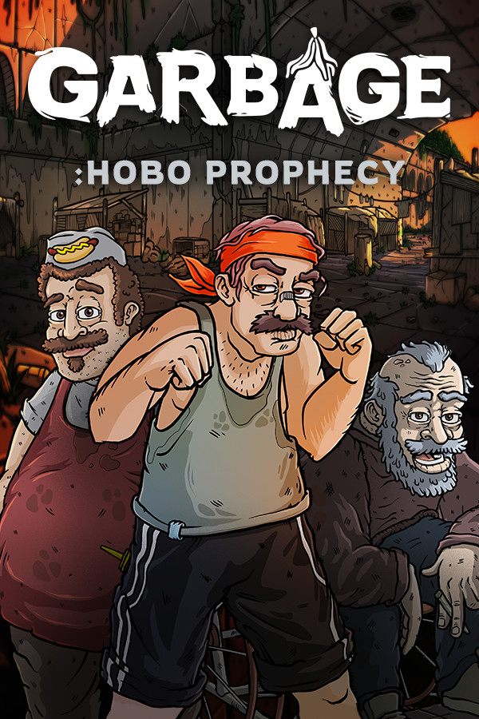

Garbage: Hobo Prophecy
Garbage: Hobo Prophecy
Details
|  | |
| Playtime | Not Played |
| Last Activity | Never |
| Added | 5/06/2025 3:25:11 |
| Modified | 7/06/2025 19:28:30 |
| Completion Status | Not Played |
| Library | Steam |
| Source | Steam |
| Platform | Macintosh PC (Windows) |
| Release Date | |
| Community Score | |
| Critic Score | |
| User Score | |
| Genre | Indie Simulation Strategy |
| Developer | |
| Publisher | |
| Feature | Single-Player |
| Links | Community Hub Discussions Guides News Store Page PCGamingWiki |
| Tag | 3D 3D Fighter Auto Battler Base Building Boxing Building Cartoony Character Customization Colony Sim Dark Comedy Dark Humor Funny Management Multiple Endings Resource Management Satire Simulation Singleplayer Strategy Survival |
Description
Garbage: Hobo Prophecy is an extended demo/prologue for the "Garbage" game. It has all the game features of the game but the story is limited to first boss fight.
Garbage is a fighting simulator game with management and building elements. Experience the struggle which a homeless man goes through in a humorous yet non-offensive manner. Primitive elements of contemporary life that we take for granted, such as staying warm, well-nourished, and hygienic, will become an issue.


Garbage is a fighting simulator game with management and building elements. Experience the struggle which a homeless man goes through in a humorous yet non-offensive manner. Primitive elements of contemporary life that we take for granted, such as staying warm, well-nourished, and hygienic, will become an issue.
- Experience a chilling story through hand drawn comics that narrate the silliness of Garbage world. Don't experience any of the negative emotions while being sucked in by the Garbage.
- Garbage world features a grim city environment with Garbage visual effects and catchy music. Listen to unique sounding character voices that resemble no words but a weird hobo mumble.
- Garbage fights are automatic, all preparations are done before the fight. A unique system that explores the uncharted grounds of the simulation genre.
- Choose between hundreds of skills to build something of a masterpiece fighter. Combine techniques to build a team that works together.
- Game features an in depth construction system with many unique buildings and upgrades. Surviving with minimal garbage resources makes it a challenge. Build wisely and prioritize the necessities.
- Take care of your bums as if they were a Tamagochi - feed, shower, train them and much more. Hobos are unique creatures that require no special care to survive: they don't cry, they don't ask for any fancy pleasures.
- The game is very similar to real life, it has a weather system. Day, night and even seasons. This amazing system can both positively and negatively influence the survival.
- Garbage world has an inventory system with hundreds of items. Items that you can equip, craft, consume and trade for garbage.
- Employ bums to work at your camp. Those tireless workers that work for no pay are crucial to your survival.
- Kids are vicious bosses for the homeless. But who would be our next generation of homeless if not kids? Children are not the only bosses that control Garbage world, in fact they are the weaklings.
- Participate in organized events: legal and illegal. Join arenas for competitive fights. Influence story based on the path you choose.